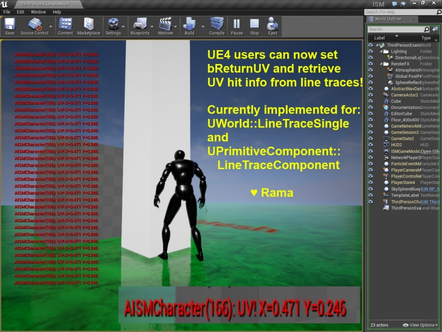

Line Traces / RayCasts How To Get UV Info From Hits
Contents
Overview
Author: ( )
In this wiki I provide you with the code to add the option to return UV information about raycast hits (PhysX) / Line Traces (UE4) !
This is an optional flag that you can set, that does not affect performance or change UE4 behavior at all until it is turned on.
Even when turned on I have not noticed any performance impact, but if you examine my code you will see that performance of UE4 and the internal works of the PhysX code are entirely unchanged unless the optional flag is enabled.

Github Engine Version
You must be using a Github version of UE4 in order to change these files below and recompile the engine.
Using a github version of UE4 you can add your own code to the engine and really make UE4 your own!
You can follow the steps here to obtain a github version of UE4!
How to get Github Version of UE4
https://www.unrealengine.com/ue4-on-github
My PhysX C++ Code For You!
I am using line numbers for the .cpp files especially to avoid posting any UE4 engine code publicaly.
Please note my line numbers are subject to change as more code is added to the engine.
The line numbers below are accurate to version 4.7.3 of UE4 . So you can always download 4.7.3 source code from Github to ensure you are seeing the larger context of my cpp code changes.
The code you do see here are my additions to the UE4 engine code to support returning UV information from PhysX PxRaycastHits .
EngineTypes.h
Around line 1485 , in FHitResult, add this
/** If CollisionQueryParams has bReturnUV set to true and the trace is a ray cast / line trace, then this value will be filled with the uv of the hit component at the point of impact */
UPROPERTY()
FVector2D UV;
CollisionQueryParams.h
Starting around line 38 , make these two changes (emphasized with arrows)
/** Whether we want to return the UV at the hit location. Only valid for Line Traces / Ray casts */
bool bReturnUV; //<~~~~~~~~~~~~
/** Set of components to ignore during the trace */
TArray<uint32, TInlineAllocator<1> > IgnoreComponents;
// Constructors
FCollisionQueryParams(bool bInTraceComplex=false)
{
bTraceComplex = bInTraceComplex;
TraceTag = NAME_None;
bTraceAsyncScene = false;
bFindInitialOverlaps = true;
bReturnFaceIndex = false;
bReturnPhysicalMaterial = false;
bReturnUV = false; //<~~~~~~~~~~~~
}
PhysXCollision.cpp
Around line 858 , add this
if(Params.bReturnUV)
{
POutputFlags |= PxSceneQueryFlag::eUV;
}
then around line 900 add this:
if(Params.bReturnUV)
{
OutHit.UV = FVector2D(PHit.u,PHit.v); //u and v are exclusive to PxRaycastHit
}
PrimitiveComponent.cpp
Around line 1700 :
bool UPrimitiveComponent::LineTraceComponent(struct FHitResult& OutHit, const FVector Start, const FVector End, const struct FCollisionQueryParams& Params)
{
bool bHaveHit = BodyInstance.LineTrace(OutHit, Start, End, Params.bTraceComplex, Params.bReturnPhysicalMaterial, Params.bReturnUV);
BodyInstance.h
Modify this function
/**
* Trace a ray against just this bodyinstance
* @param OutHit Information about hit against this component, if true is returned
* @param Start Start location of the ray
* @param End End location of the ray
* @param bTraceComplex Should we trace against complex or simple collision of this body
* @param bReturnPhysicalMaterial Fill in the PhysMaterial field of OutHit
* @param bReturnUV Fill in the UV field of OutHit
* @return true if a hit is found
*/
bool LineTrace(struct FHitResult& OutHit, const FVector& Start, const FVector& End, bool bTraceComplex, bool bReturnPhysicalMaterial = false, bool bReturnUV = false) const;
BodyInstance.cpp
around line 3383 add this
if(bReturnUV)
{
POutputFlags |= PxSceneQueryFlag::eUV;
}
then around line 3348 add this
if(bReturnUV)
{
OutHit.UV = FVector2D(BestHit.u,BestHit.v); //u and v are exclusive to PxRaycastHit
}
Currently Supported Line Trace Functions
With the above changes you can retrieve hit information from:
UWorld::LineTraceSingle
and
UPrimitiveComponent::LineTraceComponent.
Other line traces that use PxRaycastHit could be altered in similar fashion to support returning UV information.
Sample Usage Code
Once you've made the above changes and recompiled your UE4 Engine, you can use this code to get UV information from raycasts!
I used this code at the project-level in the tick function of my sample character:
The results of this code are shown in my picture above (except I am using a screen message)
void AISMCharacter::Tick(float DeltaTime)
{
Super::Tick(DeltaTime);
//~~~~~~~~~~~~
FVector Start = GetActorLocation();
FVector End = Start + GetActorRotation().Vector() * 10240;
FCollisionQueryParams TraceParams(FName(TEXT("VictoreCore Trace")), true, this);
TraceParams.bTraceComplex = true;
//~~~~~~~~~~~~~~~~~~~~~~~~~~~~~~~~~~~~~~~~~~~~~~~~~~~~~
// Focus of this wiki, telling UE4 we want the UV info!
TraceParams.bReturnUV = true;
//~~~~~~~~~~~~~~~~~~~~~~~~~~~~~~~~~~~~~~~~~~~~~~~~~~~~~
//Ignore Actors
TraceParams.AddIgnoredActor(this);
//Trace!
FHitResult HitOut;
GetWorld()->LineTraceSingle(
HitOut, //result
Start, //start
End , //end
ECC_Pawn, //collision channel
TraceParams
);
VSCREENMSG2("UV!", HitOut.UV.ToString());
}
Conclusion
With these changes to the UE4 engine you can now get UV information back from line traces!
Enjoy!
( )